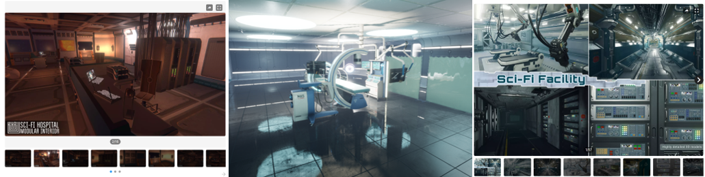
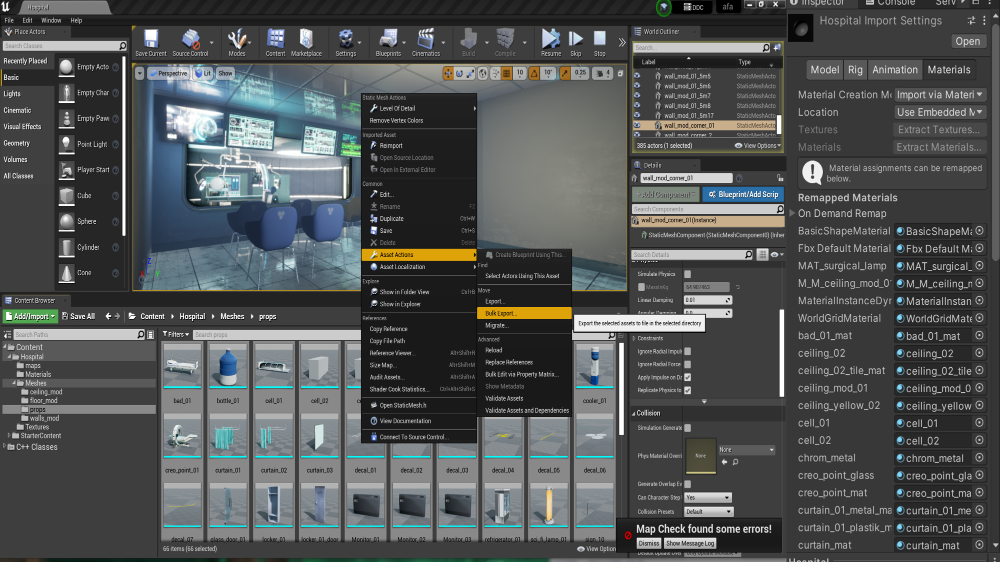
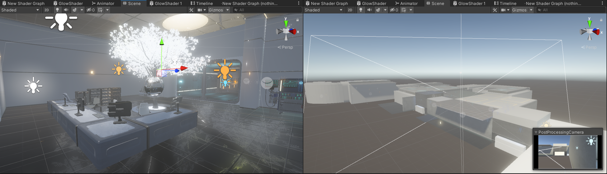
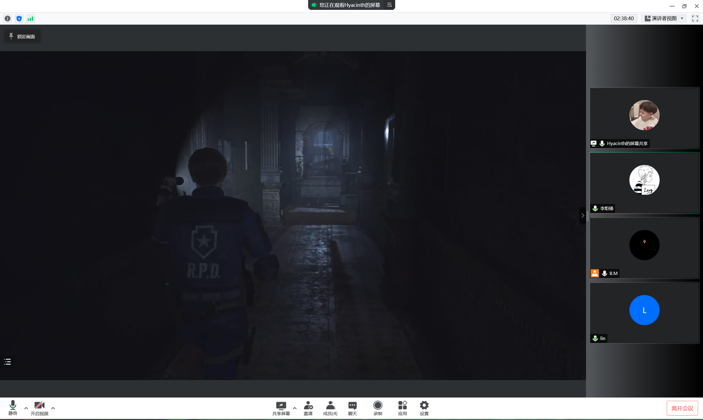
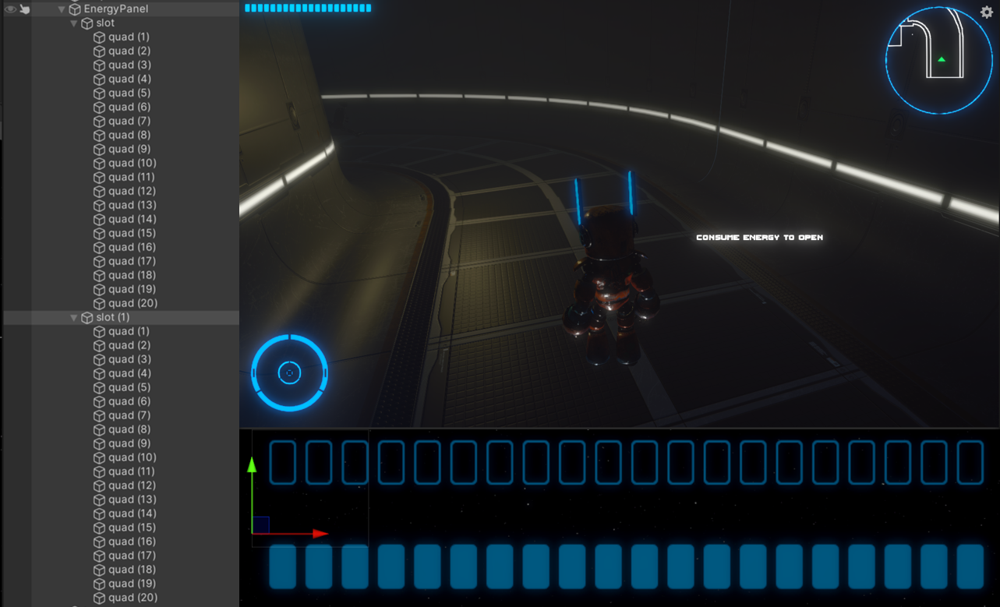
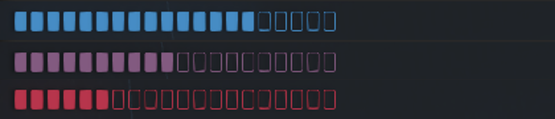

Blogs of my Development
After discussion in our group today, we decided to continue the game in the first semester and make the second level. The setting is set in a hospital. The division of labor is similar to that in the first semester. I will be responsible for the main program, logic and implementation mechanism.
In terms of mechanic implementation, many things can be used in the first level, such as maps, packs, energy. In this level, I need to complete the energy system and optimize some functions of the first level. I want to be different from the first level.
Before designing the game mechanics,
I first thought about what I wanted to continue to discuss and research in this game.
In the first level, I mainly explored how to design the right mechanics in such a game.
At this level, I want to go deeper, how much does the design of the mechanics affect the game, and how does it affect the main character?
How much does it affect the player's experience?
In addition, I learned the term immersion for the first time last semester, but many students, including me, were advised that immersion was not specific enough. So this time I want to understand what immersion is and how to improve the player's experience. Also, does the game have to deliver something? Most of the time, games are just a tool for people's entertainment, but the more I learn about them, the more I realize that games have a lot of functions and value.
First, the design and construction of the scene. Due to time constraints, we still used existing material for the scenes.
Today, I looked for the scene materials of the second level with my friends.
An official resource pack for Unreal Engine was found, but UE was not installed.
So I went to install UE and try to check the required hospital scene materials.

Today, I imported the scene into UE and found that all the material formats were in UE format, which could not be used directly. I preliminarily understood the operation mode of UE and exported the model, but there was no material for the FBX model. Then, I had to export each part individually and fill each material one by one in Unity. In addition, I learned some specific details of URP material in Unity, learned the meaning of exported “_AO”(ambient occlusion), “_R”(roughness), “_M”(metallic) and other texture formats, which could be fille into corresponding part of the URP material. I really learned something new. I was actually a bit confused about the material before.

Today, we optimized the scene. Zhenyu added the hall of the hospital, AND I adjusted the material, lighting, post-processing, etc.The initial scenario is established.

Today, I moved the main character to the game scene, as well as the UI. I found some difficulties in the code, because although the reuse of the code was considered in the first level, some temporary added codes could not be used due to the lack of consideration in the production, so it may take some time to modify or rewrite some codes in the second level development.
Specifically, in the backpack system made in the first level, some items are judged by tag and some by name, resulting in some inconsistent codes. At the same time, the code reuse of specific items in the first level is not high, which is the result of the lack of design in the early stage.
The scripts controlling the Bag system mainly concerns
Firstly I set tags for different props
For example:
//refers to the computer UI panel m_ComputerTag = "computer";//refers to the log objects in the scene m_PropTag = "Props";//refers to the cabinet which could be open m_WallCabinetTag = "wallcabinet"; .......
The input of Keycode.F is the interacting key, which almost controlls all the interactions. With triggered objects and interacting input, it goes to the function
Here is the important part. With the logic above, I could add more certain functions tageting different objects; More importantly, besides the backpack system, I also wrote other reusable functions. Actually, this behaviour is required.
For example:
InteractObjects() {//functions of level 1 if (m_Log) GetLogIntoBag(); if (m_WallCabinet) OpenOrCloseCabinet(); if (m_ComputerPanel) OpenComputer();//functions of level 2 if (m_Fashengqi ||m_Core) GetPartsIntoBag(); if (m_Flyr) SupplyEnergy(); if (m_PasswordPadPanel) OpenPasswordPad(); if (metalDoor&&!buttonPart) OperateMetalDoor(); if (buttonPart) GetButtonIntoBag(); if (m_Energy) GetEnergy(); }
After a few days of on-off modifications, the main features were mostly ported to the level 2 scene. With the preparation work completed, the next step is to set up the mechanism and consider the research problem. When making the first level, I paid more attention to the design of the mechanics, and actually I didn't think about the overall feeling of the game as a player. When I settled down to play the game, carefully read the log and listened to every robot voice, I felt I was truly immersed in the story and explored as Iron.
I started to think about the expressiveness of the game, whether we were communicating our ideas to the players. As an RPG, the game doesn't actually have the traditional RPG features, but is more about deciphering and exploration. So what is the progression of the game? So, I read about it and wanted to know the elements of an RPG. A basic definition of an RPG is usually a description of agency and experience. One of the things I was impressed profoundly is that Petterson (2006) calling RPGS art of Experience. In terms of giving the player a game experience, it is worth pondering whether the level of esthetics can be achieved.
Once by chance, I saw an article about Level system and character growth in RPG games, and the author gave a relatively accurate growth curve by referring to bloodo mathematical formula, which inspired me to explore the growth of characters. But there was a conflict point where I saw that our characters were not the traditional RPG human protagonists, so where did we grow? And that got me thinking. I found that growth is not just about upgrading and strengthening abilities, but also about the improvement and further shaping of character image, which is a gradual process.
Consequently, I wanted to ask the question, is there a difference between non-human RPGs and others? Are these games more about delivering fun or are they usually about delivering the unique meaning of the main character?
Overall, What makes an RPG Game with a Non-human Protagonist Distinct?
Our group further discussed the mechanism of the second level of the game, and determined the basic gameplay and main mechanism of our game. In addition, we refered to the game atmosphere and puzzling of Resident Evil Ⅱ.
The first is to design a mechanic for Iron's repair and care robot, which is still about finding parts, but requires the player to operate the operating table in the scene. And then again, energy harvesting, which is the core of our game.

After the group discussion about mechanics, I suddenly got inspired on my research question. RPGS have a progression system, so in characters, which is called Character Progression. But in practice, few researchers have researched into this filed. The word Character Progression may first be proposed by Peterson (2012) in his discussion of Dungeons & Dragons mechanism.
Intruingly, "much of the literature on role-playing games (RPGs) focuses on their social, performative, experiential, and/or narrative aspects. The emphasis is on the playing of the roles, as it were, and less so on the game mechanics. Curiously, the phrase RPG elements tends not to refer to the role-playing aspects of the genre, but to the rules, systems, and mechanisms that have been co-opted by other game genres and gamification practitioners." By examining a single element: mechanisms and systems for Character Progression in RPGs we can unpack the term ‘RPG elements’.
This further inspired me to think about the research problem. The core of the question is not the genre, but what it carries.
The character progression attribute is represented by Iron, and one of the systems is the energy system. The player can gain energy by accomplishing missions and passing the level while risking death if losing it. This is a rewarding and punishment mechanic that drives the player to complete the quest.
In this level, I implemented the specific common function of energy.
Figure 1: UI of Energy
Figure 2: the color changes with the units of energy

Figure 3: the bar flashes with little energy
IEnumerator CountDownBloodLosing()
{
while(true)
{
yield return new WaitForSeconds(m_LosingTime);
LoseEnergy();
}
}